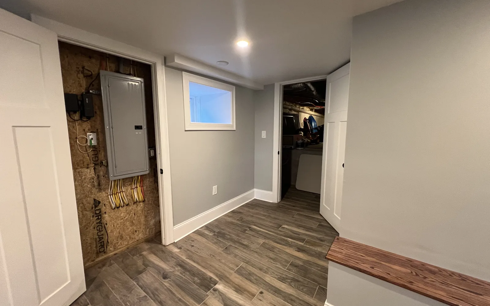
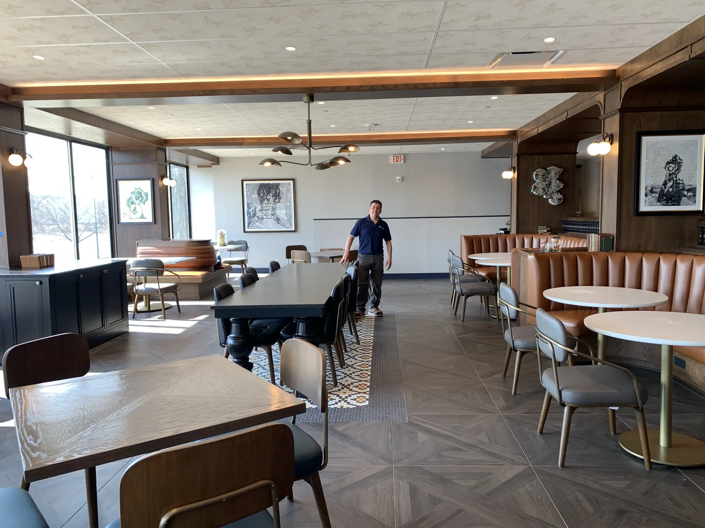
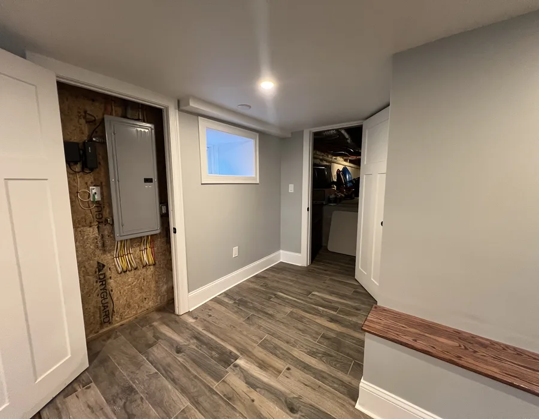

Beverly commercial remodeling
Beverly commercial remodeling for business spaces that need practical coordination
Commercial remodeling in Beverly needs a contractor who understands that the business around the project matters. DeFaria Construction focuses on access, safety, scope and schedule before work starts.
Local search focus
Commercial remodeling should respect the customer path and the workday.
A Beverly office, retail space or service business may need phased work, clean access, safety awareness and communication around customer flow. The estimate should reflect whether the space can stay partially active during the project.
This page supports commercial remodeling intent around Downtown Beverly, Ryal Side, North Beverly and nearby business corridors without forcing visitors into a generic service page.
- Clear estimate conversations before the project starts.
- Direct communication with homeowners and business owners.
- Local coverage across Essex County and Middlesex County.
Areas covered
Beverly commercial searches need a page that speaks to local business owners.
This page supports Beverly commercial remodeling searches and related local intent. It gives visitors enough context to decide whether DeFaria Construction is relevant before they call.
- Downtown Beverly
- Ryal Side
- North Beverly
- Montserrat
- Centerville
- Beverly Farms
Project photos
Commercial project photos for Beverly businesses
Commercial visitors need to see that the work can support real business use, not just a generic construction claim.



Experience
Why this page is built for real visitors, not just keywords.
DeFaria Construction is a local construction and remodeling company serving homeowners and business owners in Massachusetts. The company records show direct owner involvement from Luiz DeFaria and BBB credibility as part of the trust stack, so the page is written around project clarity, service area fit and practical next steps instead of repeating a city name without value.
The goal is to help someone searching for Beverly commercial remodeling understand the type of work, the local areas covered and how to start a direct conversation with the contractor before requesting an estimate.
Request an estimateFAQ
Common questions about Beverly commercial remodeling
What commercial remodeling work can DeFaria Construction support in Beverly?
DeFaria Construction can support commercial improvements, office updates, storefront work and interior remodeling where the owner needs organized scope and execution.
Can Beverly commercial remodeling be planned around business activity?
Yes. The planning conversation should cover access, schedule, safety, customer flow and any areas that need to stay usable during the project.
Why make a Beverly commercial remodeling page?
Commercial searches are local and specific. A Beverly page gives business owners a clearer path than a general commercial projects page.